Complete reference for ECE/MAE 148 — covering VESC Tool installation, firmware updates for VESC 6.x and 4.x hardware, FOC motor detection, hall sensor calibration, battery configuration, and servo steering setup for autonomous RC cars.
⚡VESC 6.x / EDU
🔧VESC Tool
🚗BLDC Motor
🔋LiPO Battery
01
Overview & Safety
Read this before touching any hardware
CRITICAL
The VESC (Vedder Electronic Speed Controller) is the motor driver used in all ECE/MAE 148 robots. It controls the BLDC (Brushless DC) drive motor and the servo motor used for steering. Before beginning setup, you must understand the hardware variants and safety requirements — choosing the wrong firmware version can permanently damage your VESC.
🛑
STAND REQUIREMENT — WHEELS MUST BE CLEAR
Place the robot on the class-provided stand before connecting anything. The drive wheels will spin during motor detection — they must be completely clear of any surfaces, cables, your laptop, and your hands. This is not optional. Failure to use the stand can result in injury or damaged hardware. This warning appears multiple times in this guide intentionally.
⚠
DO NOT Disconnect During Firmware Update
Never remove power or the USB cable from the VESC while firmware is uploading. Doing so will almost certainly brick the VESC, requiring a programmer to recover it. Wait for the "Upload done" confirmation before touching any cables.
VESC Hardware Versions in This Class
Hardware
Identifier in VESC Tool
Firmware Track
Notes
VESC 6 EDU
Hw: EDU
v6.00 (VESC_default.bin)
Primary class hardware as of Fall 2022
Original VESC 6.x
Hw: 60
v6.00 (VESC_default.bin)
Can upgrade to latest firmware
FLIPSKY FSESC 6.6
Hw: 60 or similar
v6.00
VESC 6.x compatible, follow VESC 6 instructions
FLIPSKY FSESC 6.7
Hw: 60 or similar
v6.00
VESC 6.x compatible, follow VESC 6 instructions
VESC 4.12 / FLIPSKY Mini FSESC4.2
Hw: 412
v4.2 (VESC_servoout.bin)
Legacy. Use VESC Tool v2.03 only. Do NOT upgrade firmware.
ℹ
Which Hardware Do You Have?
Look at the physical board label, or connect with VESC Tool and read the hardware version shown in the bottom status bar and the Firmware section. If you see Hw: EDU or Hw: 60, follow the VESC 6.x instructions (Sections 4–5). If you see Hw: 412, follow the legacy VESC 4.x instructions (Section 6).
02
Required Hardware
Everything you need before starting
Gather all hardware listed below before starting. Using the wrong battery or cable during firmware update will damage the VESC.
Item
Specification
Why It's Needed
RC Car Battery (LiPO/LiIon)
3S or 4S depending on your robot — ECE/MAE 148 uses 3S (3-cell, 3Ah) by default
The VESC must be powered by the same battery you plan to use in operation. Using a different power source produces incorrect motor calibration values.
LiPO Battery Alarm
Matches your battery cell count
Protects the battery from over-discharge during the motor detection spin cycle, which can run for several seconds.
Micro-USB Cable (long)
At least 1 m recommended
Connects VESC to your host PC. Must be long enough that the PC stays away from the spinning wheels. Ask a TA if you need a longer cable.
Host PC
Windows / macOS / Linux with USB port
Runs VESC Tool for firmware update and configuration. Not the Raspberry Pi — use your laptop.
Class-provided robot stand
Lifts all four wheels off the ground
Wheels spin freely during motor detection. The stand prevents the robot from driving off the table.
BLDC drive motor
Sensored (hall sensor connector)
The class uses sensored BLDC motors for precise low-speed control.
Steering servo motor
Standard RC servo (PWM)
Controlled via VESC's PWM servo output.
03
Install VESC Tool
Use the class-provided version to ensure identical firmware across all robots
The entire class uses the same version of VESC Tool to keep firmware versions consistent between robots. Using a different version may produce incompatible firmware builds.
⚠
Use the Class-Provided VESC Tool
When VESC Tool opens, it may prompt you to download a newer version. Dismiss this warning and do not upgrade unless you are using the class-provided version. The instructor provides a specific version that matches the firmware used on all class robots.
1
Download the Class-Provided VESC Tool
Get the VESC Tool version specified by your instructor from the class Google Drive folder linked below. This folder contains the exact version used in class for both VESC 6.x and VESC 4.x hardware. You can also download manually using the direct link.
📥
Class VESC Tool — Google Drive Download
Download the class-provided VESC Tool from the shared Google Drive folder:
https://github.com/rpasichnyk/vesc_tool/releases/tag/v2.03
# Download the binary for your OS from this release page
2
Install and Launch VESC Tool
On Windows, run the installer. On macOS, drag to Applications. On Linux, extract and run the AppImage. Launch the tool and dismiss any "newer version available" prompts.
🖼
📁 vesc_fig01_version_popup.png
PDF Page 1 — VESC Tool popup: "A new version of VESC Tool is available. Go to http://vesc-project.com/ to download it and get all the latest features." with OK button.
Fig 01
VESC Tool version warning — click OK to dismiss, do NOT follow the upgrade link
PDF p.1
✓
Dismiss Version Warnings
If you see a popup saying "A new version of VESC Tool is available", click OK to dismiss it. Do NOT click the link to download a new version unless instructed by the TA.
04
Connect the VESC to Your Host PC
Power and USB setup before opening VESC Tool
🛑
Robot Must Be on the Stand
Place the robot on the class-provided stand. All wheels must be completely clear to spin freely. Keep your laptop and hands away from the wheel path.
1
Disconnect the VESC from the Raspberry Pi
If the VESC is currently plugged into the SBC (Single Board Computer / Raspberry Pi), unplug the USB cable from the SBC. For this procedure, the VESC must connect directly to your host (laptop) PC.
2
Connect the LiPO Battery Alarm
Plug the LiPO battery alarm (balance plug connector) into the battery before connecting the battery to the VESC. This protects the battery from being over-discharged during the motor detection cycle.
3
Connect the Battery to the VESC
Plug the RC car battery into the VESC's power input. Use the same battery you plan to use during robot operation — the motor calibration values depend on supply voltage.
4
Connect VESC to Host PC via Micro-USB
Plug the micro-USB cable into the VESC and the other end into your laptop. Use a cable long enough that your laptop is kept well clear of the wheels.
5
Open VESC Tool and Connect
Launch VESC Tool on your laptop. Click the connect icon (plug symbol) in the top-left toolbar, or go to the Connection panel, click SCAN, then click CONNECT on the detected device.
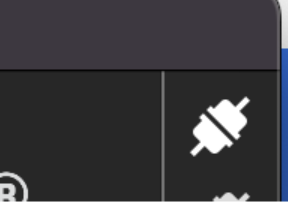
🖼
📁 vesc_fig02a_connect_icon.png
PDF Page 2 — VESC Tool connect icon (white plug icon in top-left toolbar)
Fig 02a Connect icon in toolbar PDF p.2
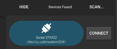
🖼
📁 vesc_fig02b_connection_panel.png
PDF Page 2 — Connection panel: HIDE / Devices Found / SCAN buttons, detected device "Serial STM32 /dev/tty.usbmodem3141" with CONNECT button
Fig 02b Connection panel — SCAN then CONNECT PDF p.2
VESC Tool connection flow
1. Click the plug/connect icon OR2. Connection panel → SCAN → select your device → CONNECT# Expected output in status bar:Connected to VESC Fw: v6.00, Hw: EDU # (example)
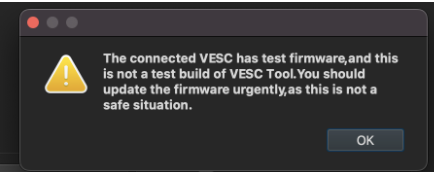
🖼
📁 vesc_fig03_test_fw_warning.png
PDF Page 2 — Warning dialog: "The connected VESC has test firmware, and this is not a test build of VESC Tool. You should update the firmware urgently, as this is not a safe situation." with OK button.
Fig 03 Test firmware warning — dismiss with OK; VESC 6.x users proceed to update, VESC 4.x users do NOT update PDF p.2
ℹ
Firmware Version Warning at Connection
VESC Tool may display "The connected VESC has test firmware and this is not a test build of VESC Tool." This is expected for VESC 4.x devices. For VESC 6.x: dismiss and proceed to update. For VESC 4.x: dismiss and do NOT update.
05
Firmware Update — VESC 6.x
Update to firmware v6.00 for all VESC 6.x hardware (EDU, original 6.x, FLIPSKY 6.6/6.7)
VESC 6.x ONLY
After connecting, identify your hardware version in the Firmware panel. VESC 6.x devices (including VESC EDU) should be updated to firmware v6.00 using VESC_default.bin. The target firmware version as of 30 Dec 2022 is 6.00.
How to Identify Your Hardware Version
When connected in VESC Tool, look at the bottom-left status area and the Firmware panel. You should see one of the following hardware identifiers:
Hardware Shows
Firmware File
Action
Hw: EDU
VESC_default.bin (EDU row)
Update to v6.00
Hw: 60
VESC_default.bin (60 row)
Update to v6.00
Hw: 412
VESC_servoout.bin (v4.2)
Skip to Section 6 — do NOT update here
1
Open the Firmware Panel
In the VESC Tool left navigation, click Firmware. You will see a list of hardware versions and their associated firmware files. Find your hardware version in the list (EDU or 60).
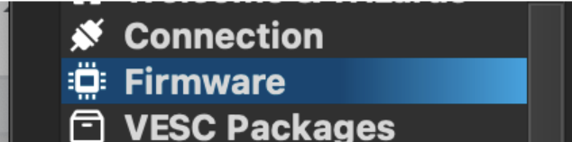
🖼
📁 vesc_fig04_sidebar_firmware.png
PDF Page 2 — VESC Tool left sidebar: Connection, Firmware (highlighted in blue), VESC Packages
Fig 04 VESC Tool sidebar — click Firmware to open the firmware panel PDF p.2
2
Select Your Hardware Row and Click Update
Select the row matching your hardware (e.g., EDU → VESC_default.bin). Click the download arrow button labeled "Update firmware on the connected VESC". Do not click "↓ All" unless instructed.
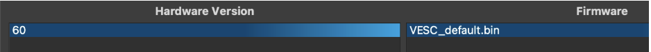
🖼
📁 vesc_fig05_fw_hw60_row.png
PDF Page 2 — Firmware list: Hardware Version column showing "60" highlighted in blue; Firmware column showing "VESC_default.bin"
Fig 05 Hardware version "60" row selected — VESC_default.bin will be flashed (VESC EDU shows "EDU" row instead) PDF p.2
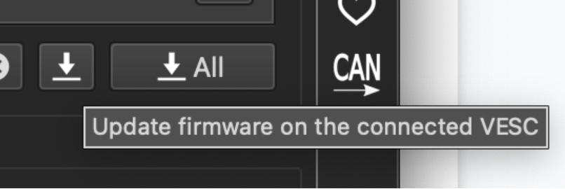
🖼
📁 vesc_fig06_fw_toolbar_buttons.png
PDF Page 3 — Toolbar showing download arrow (↓), "↓ All" button, CAN button; tooltip reads "Update firmware on the connected VESC"
Fig 06 Firmware update buttons — click the single ↓ arrow (not ↓ All) PDF p.3
🖼
📁 vesc_fig07_download_button.png
PDF Page 3 — Large download arrow button (dark square with white downward arrow icon)
Fig 07 The download/flash button — click to begin firmware upload PDF p.3
3
Confirm the Firmware Overwrite Warning
A dialog appears: "Uploading new firmware will clear all settings in the VESC firmware and you have to do the configuration again. Do you want to continue?" Click YES. All settings are cleared — this is expected and you will reconfigure them in the motor detection steps.
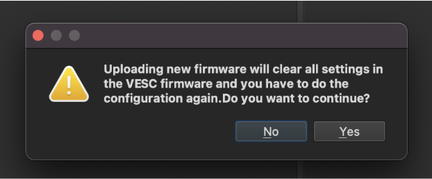
🖼
📁 vesc_fig08_overwrite_dialog.png
PDF Page 3 — Dialog: "Uploading new firmware will clear all settings in the VESC firmware and you have to do the configuration again. Do you want to continue?" with No / Yes buttons
Fig 08 Firmware overwrite confirmation — click YES PDF p.3
🛑
DO NOT Disconnect During Upload
After clicking YES, do not disconnect power or the USB cable until you see "Upload done" in the status bar. The VESC will automatically reboot within 10 seconds after the upload. Do not touch anything until the reboot completes.
4
Verify Successful Upload
After the VESC reboots, reconnect in VESC Tool. The status bar should show the new firmware version. For VESC EDU, you will see Fw: v6.00, Hw: EDU.
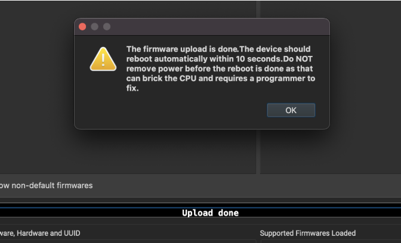
🖼
📁 vesc_fig09a_upload_done_dialog.png
PDF Page 4 — Dialog: "The firmware upload is done. The device should reboot automatically within 10 seconds. Do NOT remove power before the reboot is done as that can brick the CPU and requires a programmer to fix." with OK button
Fig 09a Upload done dialog — do not remove power PDF p.4
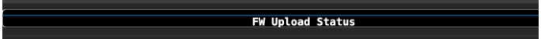
🖼
📁 vesc_fig09b_upload_done_statusbar.png
PDF Page 4 — VESC Tool bottom status bar showing "Upload done" text in the FW Upload Status area
Fig 09b "Upload done" in status bar — wait for auto-reboot PDF p.4
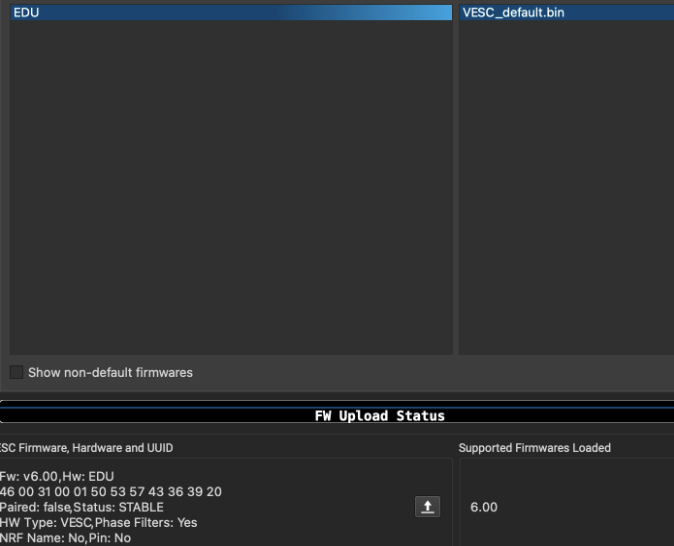
🖼
📁 vesc_fig10_fw_update_success.png
PDF Page 4 — VESC Tool firmware panel after successful update: EDU row selected, VESC_default.bin; status shows "Fw: v6.00, Hw: EDU / Paired: false, Status: STABLE / HW Type: VESC, Phase Filters: Yes / NRF Name: No, Pin: No" with "6.00" badge; also shows "Hw: 60" hardware version badge.
Expected status after successful VESC 6.x firmware update
Fw: v6.00, Hw: EDU
Paired: false, Status: STABLE
HW Type: VESC, Phase Filters: Yes
NRF Name: No, Pin: No
# Status bar shows: "Upload done" then VESC reboots automatically
✓
Firmware Upload Done — Now Disconnect Power Safely
Once you see "Upload done" and the VESC has rebooted (about 10 seconds), it is safe to proceed. The next section covers connecting the motor and servo cables before running motor detection.
06
Firmware Update — VESC 4.x Legacy
Special servo-out firmware for VESC 4.12 / FLIPSKY Mini FSESC4.2
LEGACY ONLY
ℹ
VESC 6.x Users — Skip This Section
If you completed Section 5 (VESC 6.x firmware update), skip directly to Section 7 (Cable Connections). This section is only for robots still using VESC 4.x hardware.
VESC 4.x hardware requires a special firmware called VESC_servoout.bin that repurposes the VESC's PWM input pin as a PWM output to drive the steering servo motor. The latest VESC Tool versions do not include this firmware — you must use VESC Tool v2.03 which ships with firmware v4.2 containing VESC_servoout.bin.
⚠
DO NOT Upgrade VESC 4.x Firmware
For VESC V4.x (e.g., V4.2, Hw: 412), do NOT upgrade to the latest firmware. Later firmware versions for 4.x hardware do not include vesc_servoout.bin, which is required for servo steering. Use VESC Tool v2.03 and stay on firmware v4.2.
1
Download VESC Tool v2.03 (Required for 4.x)
Use the pre-built release from the repository below. Do not use any other version — only v2.03 includes the servoout firmware for 4.x hardware.
In VESC Tool v2.03, go to Firmware. Find hardware version 4.12 and select VESC_servoout.bin (NOT the default VESC_default.bin). Click Update. The servoout firmware enables the PWM output needed for steering.
🛑
DO NOT Disconnect During Upload
Same rules apply as VESC 6.x: never disconnect power or USB during firmware upload. Wait for "Upload done" and automatic reboot before proceeding.
3
Alternative Firmware Source (if needed)
If VESC Tool v2.03 does not include servoout firmware for your specific 4.x hardware, the following repository contains archived v4.2 firmware files:
After flashing VESC_servoout.bin on VESC 4.x, continue with Section 7 (Cable Connections) and follow the same motor detection steps as VESC 6.x — the wizard procedure is identical.
07
Cable Connections
Connect motor, sensors, and servo before running motor detection
🛑
Disconnect Power Before Connecting Cables
Remove the battery from the VESC before connecting or disconnecting any motor or servo cables. Never connect or disconnect motor phase wires while the VESC is powered — this can cause large voltage spikes and destroy the FETs.
1
Disconnect Battery from VESC
Before connecting any motor cables, remove the battery connector from the VESC. Also unplug the USB cable from the host PC.
2
Connect the BLDC Drive Motor
Connect the three motor phase wires (usually labeled A, B, C or bullet connectors) from the BLDC motor to the three motor output terminals on the VESC. The order can be changed later in software if the motor spins the wrong direction.
3
Connect the Motor Sensor Cable (Hall Sensors)
Connect the motor's hall sensor connector (usually a 6-pin JST connector) to the VESC's sensor port. This cable carries the three hall sensor signals, 5V power, and ground — it enables the VESC to know rotor position for low-speed sensored FOC control.
4
Connect the Steering Servo Motor
Connect the servo motor's 3-pin connector (signal/power/ground) to the VESC's PWM servo output port. The signal (white/yellow) wire should be at the correct pin — consult your VESC variant's pinout if unsure.
5
Reconnect the LiPO Battery Alarm and Battery
Plug the LiPO alarm balance connector back in, then reconnect the main battery to the VESC.
6
Reconnect USB to Host PC and Open VESC Tool
Plug the USB cable back into the host PC. Launch VESC Tool and connect to the VESC using the connect button or the Connection panel.
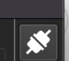
🖼
📁 vesc_fig11_reconnect_icon.png
PDF Page 5 — VESC Tool connect icon (plug icon, same as Fig 02a) — reconnect after cabling is complete
Fig 11 Reconnect VESC Tool after completing all cable connections PDF p.5
Cable
From
To (VESC Port)
Purpose
3x Motor Phase Wires
BLDC Motor (A, B, C)
Motor output terminals
Power delivery to motor coils
6-pin Hall Sensor JST
Motor sensor port
VESC sensor input
Rotor position sensing for FOC
3-pin PWM Servo
Steering servo
VESC servo/PWM output
Steering control via PWM signal
Battery Main Connector
LiPO/LiIon Battery
VESC power input
Main power supply
Balance Plug
LiPO Battery
LiPO alarm monitor
Cell voltage monitoring / over-discharge protection
08
FOC Motor Detection Wizard
Use the Setup Motors FOC wizard to automatically detect motor parameters
🛑
Last Chance — Is the Robot on the Stand?
The motor detection process will spin the wheels. Confirm the robot is elevated on the class stand and all four wheels are clear of any contact before proceeding.
The FOC (Field-Oriented Control) wizard automatically measures your motor's resistance, inductance, and flux linkage, then configures the VESC optimally. This replaces manual parameter entry and produces more accurate calibration than guessing values.
1
Navigate to Welcome & Wizards → Setup Motors FOC
In the VESC Tool left sidebar, click Welcome & Wizards. Then click the Setup Motors FOC button. A dialog will appear asking about loading default parameters.
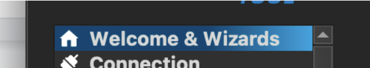
🖼
📁 vesc_fig12a_wizards_menu.png
PDF Page 6 — VESC Tool sidebar: "Welcome & Wizards" highlighted in blue, "Connection" below it
Fig 12a Welcome & Wizards in sidebar PDF p.6
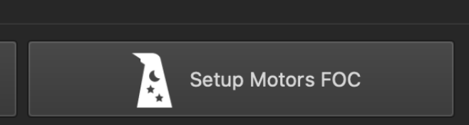
🖼
📁 vesc_fig12b_setup_motors_foc.png
PDF Page 6 — Large button labeled "Setup Motors FOC" with star/asterisk icon on the left
Fig 12b Setup Motors FOC button PDF p.6
2
Load Default Parameters — Click YES
The dialog "Would you like to restore this VESC, and all VESCs on the CAN-bus (if any), to their default settings before proceeding?" — click YES. This ensures a clean starting state and prevents old misconfigured settings from interfering.
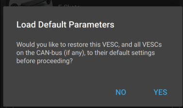
🖼
📁 vesc_fig13_load_defaults_dialog.png
PDF Page 6 — Dialog: "Load Default Parameters — Would you like to restore this VESC, and all VESCs on the CAN-bus (if any), to their default settings before proceeding?" with NO / YES buttons
Fig 13 Load Default Parameters — click YES PDF p.6
3
Select Motor Usage: Generic
On the Usage tab, select Generic. Do not select a specific motor profile — Generic applies the appropriate FOC parameters for a wide range of BLDC motors.
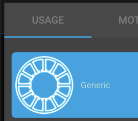
🖼
📁 vesc_fig14_foc_usage_tab.png
PDF Page 7 — FOC wizard USAGE tab: "Generic" option highlighted in blue with a circular radial motor icon
Fig 14 Select "Generic" on the USAGE tab PDF p.7
4
Select Motor Type: Medium Inrunner (~750g)
On the Motor tab, select Medium Inrunner (~750 g). This motor size category has been validated to work correctly for the class RC car motors (e.g., XeRun 3660 G2 and similar sensored inrunner motors).
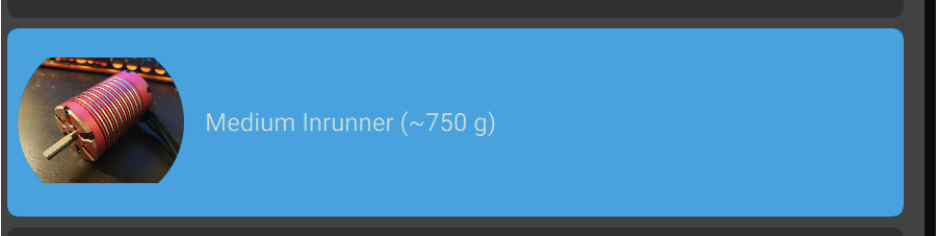
🖼
📁 vesc_fig15_foc_motor_tab.png
PDF Page 7 — FOC wizard Motor tab: "Medium Inrunner (~750 g)" card highlighted in blue, with an image of an inrunner motor on the left side
Fig 15 Select "Medium Inrunner (~750 g)" on the Motor tab PDF p.7
ℹ
Why Medium Inrunner?
The class uses sensored inrunner BLDC motors in the 700–800g range. The Medium Inrunner preset sets appropriate current limits and FOC tuning parameters for this motor class. Using the wrong preset can cause jerky performance or trigger over-current protection.
09
Battery Configuration
Set the correct battery type, cell count, and capacity
Correct battery configuration is critical for safety. The VESC uses the battery settings to calculate low-voltage cutoff thresholds. Using the wrong cell count can result in either premature shutdowns or, more dangerously, over-discharging the LiPO/LiIon battery which causes permanent damage and fire risk.
⚠
Check Your Physical Battery
Look at the label on your battery before entering values. The cell count (S) and capacity (Ah) are printed on the battery itself. Do not assume — getting this wrong can damage the battery. ECE/MAE 148 generally uses 3S 3Ah batteries. DSC 178 and racing robots use 4S 4Ah.
Course / Robot
Battery Cells Series
Battery Capacity
Battery Type
ECE/MAE 148
3 (3S)
3.000 Ah
BATTERY_TYPE_LIION_3_0__4_2
DSC 178 / Racing
4 (4S)
4.000 Ah
BATTERY_TYPE_LIION_3_0__4_2
1
Set Battery Type, Cells, and Capacity
In the Battery tab of the FOC wizard, set Battery Type to BATTERY_TYPE_LIION_3_0__4_2. Set Battery Cells Series and Battery Capacity to match your physical battery (see table above).
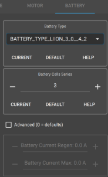
🖼
📁 vesc_fig16_foc_battery_tab.png
PDF Page 7 — FOC wizard Battery tab: Battery Type = BATTERY_TYPE_LIION_3_0__4_2; Battery Cells Series = 3 (with +/- buttons and CURRENT/DEFAULT/HELP); Battery Capacity shown; also shown on PDF p.9 with 4 cells / 4.000 Ah for DSC 178.
Fig 16
Battery tab — ECE/MAE 148 uses 3 cells / 3.000 Ah; DSC 178 / racing robots use 4 cells / 4.000 Ah
PDF p.7–9
After setting the battery parameters, click Next to advance to the motor parameter configuration page.
10
Motor Parameters
Set pole count, gear ratio, and wheel diameter
The VESC needs accurate motor parameters to calculate correct RPM readings and speed control. The most important value is the number of magnetic poles on your motor — this directly affects all speed calculations.
Finding Your Motor's Pole Count
You must look up the pole count for your specific motor model. The pole count is NOT the same as the number of stator slots — it refers to the number of magnetic poles on the rotor. For the class example motor:
Example: XeRun 3660 G2 Sensored Motor
# Motor part number: XeRun 3660 G2# Manufacturer link:
https://www.hobbywingdirect.com/products/xerun-3660-g2-sensored-motor
# Spec quote: "innovative 4-pole-8-magnet staggered pole rotor"# Pole count for VESC wizard = 4# (Always look up YOUR specific motor — do not guess)
ℹ
How to Find Pole Count
Search the motor part number on the manufacturer's website or datasheet. Look for phrases like "X-pole rotor" or "X magnet". The number you enter in VESC Tool is the pole count (not the slot count). Most small RC inrunner motors are 4-pole. If you cannot find the spec, ask a TA.
1
Set Gear Ratio: Direct Drive
In the wizard, select Direct Drive for gear ratio. The class RC cars use a direct-drive setup between the motor and wheels with no gear reduction factor beyond what the physical gearbox handles internally.
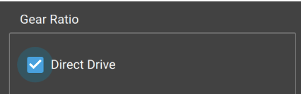
🖼
📁 vesc_fig17_foc_gear_ratio.png
PDF Page 8 — FOC wizard: "Gear Ratio" section showing "Direct Drive" option with a blue checkmark selected
Fig 17 Select "Direct Drive" for the gear ratio setting PDF p.8
2
Set Number of Motor Poles
Enter the pole count for your motor. For the XeRun 3660 G2 and most class motors, this is 4. Look up your motor's datasheet to confirm.
Motor pole count entry
Motor Poles: 4# Verify against YOUR motor's datasheet
3
Set Wheel Diameter: 100.00 mm
Set the wheel diameter to 100.00 mm. This is the standard wheel size used on the class RC car platform. Accurate wheel diameter ensures speed readings in m/s are correct when using the Robocar framework later.
Wheel diameter setting
Wheel Diameter: 100.00 mm# Standard class RC car wheel
11
Run Detection & Motor Direction
Execute the FOC detection spin cycle and set correct forward direction
🛑
Final Safety Check — Wheels Must Be Completely Clear
This step will physically spin the wheels. This is your last chance to verify the robot is elevated on the stand with all wheels free of any contact. Keep hands, cables, and your laptop away from the wheel path.
1
Click "Run Detection"
In the wizard, click Run Detection. The VESC will automatically measure resistance (RL measurement), inductance, and flux linkage (λ). The wheels will spin forward briefly then backward. This process takes approximately 10–30 seconds.
ℹ
What Happens During Detection
The VESC runs controlled current pulses through the motor to measure its electrical parameters (R, L, λ). These values are unique to your specific motor. The auto-detected values will be different from the example screenshots — that is normal and correct.
2
Set Motor Direction (FWD or REV)
After detection, the wizard shows a Direction screen with FWD and REV buttons. Press FWD — if the wheels spin forward (away from the front of the car), you're done. If the wheels spin backward when pressing FWD, press REV to invert the direction. Confirm that FWD produces forward wheel rotation before continuing.
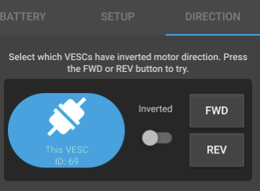
🖼
📁 vesc_fig18_foc_direction_tab.png
PDF Page 9 — FOC wizard DIRECTION tab: three tabs (BATTERY | SETUP | DIRECTION active); "This VESC ID: 69" icon with Inverted toggle and FWD/REV buttons
Fig 18 Direction tab — press FWD and verify wheels spin forward; toggle Inverted or press REV if backwards PDF p.9
Direction determination logic
# After clicking Run Detection:# Press FWD button in wizard# If wheels spin in FORWARD direction:# → Leave as FWD, continue to next step# If wheels spin in REVERSE direction:# → Enable the "Inverted" toggle / click REV# → This is controlled by toggling the Inverted switch next to This VESC
3
Write Motor Configuration
Click the Write Motor Configuration button (↓M icon in the toolbar). This saves all detected motor parameters to the VESC's non-volatile memory. Without this step, the settings are lost on power cycle.
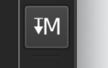
🖼
📁 vesc_fig19_write_motor_config.png
PDF Pages 9 & 12 — Write Motor Configuration button: dark square toolbar button showing "↓M" (downward arrow with M) icon
Fig 19 Write Motor Configuration (↓M) — always click this after detection or changing motor settings PDF p.9
Write motor config — do this immediately after detection
# Click the ↓M button in the VESC Tool toolbar# OR: Motor Settings → Write Motor Configuration# Confirmation: "Motor configuration written"
4
Write App Configuration
Click the Write App Configuration button (↓A icon). This saves the application-layer settings (UART, servo output, etc.) to the VESC. Always write both motor and app config after making changes.
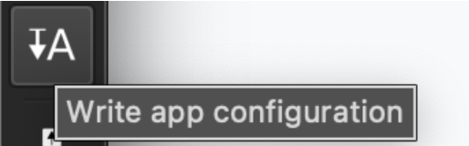
🖼
📁 vesc_fig20_write_app_config.png
PDF Pages 10 & 12 — Write App Configuration button: dark square toolbar button with "↓A" (downward arrow with A) icon, tooltip reads "Write app configuration"
Fig 20 Write App Configuration (↓A) — save app-layer settings to NVRAM PDF p.10
Write app config
# Click the ↓A button in the VESC Tool toolbar# OR: App Settings → Write App Configuration# Confirmation: "App configuration written"
✓
Tires Not Moving / Steering?
If the front tires do not move or steer at this stage, that is completely normal and expected. Nothing is broken. The servo output needs to be enabled separately — this is covered in Section 13. Continue to Section 12 (Hall Sensor Detection) now.
12
Hall Sensor Detection
Detect and map the hall sensor table for sensored FOC operation
The motor detection wizard sets motor parameters (R, L, λ) but the hall sensor mapping is a separate step. Hall sensors tell the VESC exactly where the motor rotor is at low speeds, enabling smooth startup and precise low-speed control — critical for autonomous vehicle operation at low throttle values.
Why Hall Sensor Detection Matters
Without correct hall sensor calibration, the motor operates in sensorless mode below the Sensorless ERPM threshold. This produces stuttering and jerky starts. With hall sensors properly mapped, the VESC transitions smoothly from sensored to sensorless operation as speed increases.
1
Navigate to Motor Settings → FOC → Hall Sensors Tab
In the VESC Tool left sidebar, click Motor Settings → FOC. In the tabs at the top of the FOC panel, click the Hall Sensors tab. You will see the Sensor Mode dropdown and the Hall Table entries.
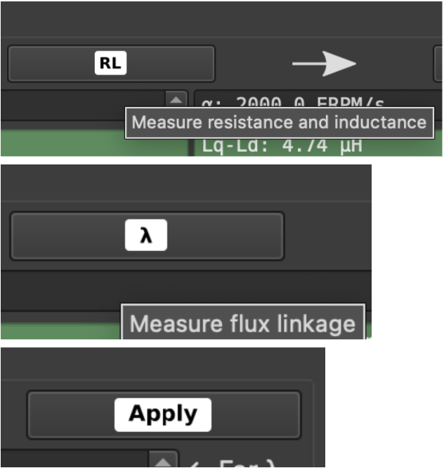
🖼
📁 vesc_fig21_foc_motor_settings.png
PDF Page 10 — VESC Tool: sidebar showing General/FOC/PID Controllers (FOC highlighted); RL measurement panel with "Measure resistance and inductance" tooltip; λ (Measure flux linkage) panel; Apply button
Fig 21 Motor Settings → FOC panel showing the RL measurement, flux linkage (λ), and Apply controls PDF p.10
2
Verify Sensor Mode is Set to "Hall Sensors"
The Sensor Mode dropdown should show Hall Sensors. If it shows Sensorless or Encoder, change it to Hall Sensors. This tells the VESC to use the connected hall sensor cable for rotor position feedback.
🖼
📁 vesc_fig22a_sensor_mode_hall.png
PDF Page 11 — Large display: "Sensor Mode" label on left, "Hall Sensors" value on right (both in large white text on dark background)
Fig 22a Sensor Mode set to Hall Sensors PDF p.11
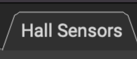
🖼
📁 vesc_fig22b_hall_sensors_button.png
PDF Page 11 — Standalone "Hall Sensors" button/badge (dark button with Hall Sensors label)
Fig 22b Hall Sensors selection button PDF p.11
Sensor Mode setting
Sensor Mode: Hall Sensors# Must be set to this value# NOT: Sensorless# NOT: Encoder
3
Run Hall Sensor Detection
At the bottom of the Hall Sensors tab, find the Detect Hall Sensors section. Set the detection current (default 10.00 A is appropriate for class motors). Click Start Detection. The motor will spin briefly while the hall sensor pattern is mapped.
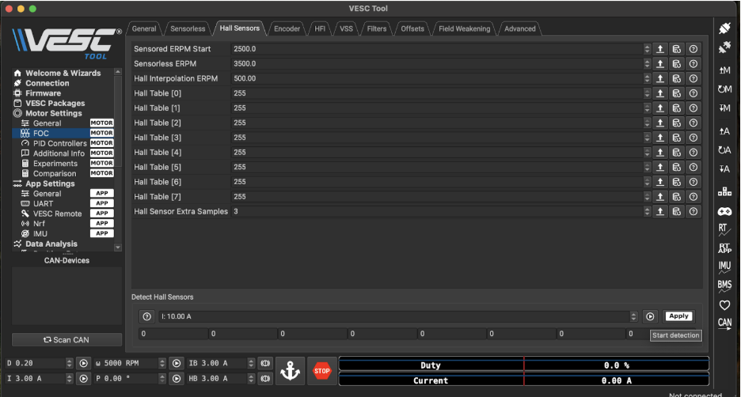
🖼
📁 vesc_fig23_hall_table_255.png
PDF Page 11 — Full VESC Tool screenshot: Hall Sensors tab active; Hall Table [0]–[7] all showing 255 (before detection); Detect Hall Sensors section with I: 10.00 A, Apply button, Start detection button visible at bottom
Fig 23 Hall Sensors tab before detection — all values show 255; click Start Detection to populate the table PDF p.11
⚠
Wheels Will Spin During Detection
The motor rotates during hall sensor detection. Robot must be on the stand with wheels clear.
4
Verify Hall Table Values and Click Apply
After detection, the Hall Table entries (Hall Table [0] through [7]) will be populated with values. These values are unique to your motor and wiring — they will differ from the example below. Click Apply to accept the detected values.
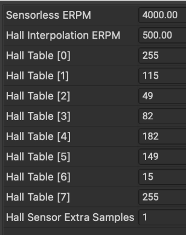
🖼
📁 vesc_fig24_hall_table_detected.png
PDF Page 11 — Hall sensor values table after detection: Sensorless ERPM: 4000.00, Hall Interpolation ERPM: 500.00, Hall Table [0]: 255, [1]: 115, [2]: 49, [3]: 82, [4]: 182, [5]: 149, [6]: 15, [7]: 255, Hall Sensor Extra Samples: 1
Fig 24
Example hall table values after detection — your values will differ; this is normal and expected
PDF p.11
Example hall sensor detection output (your values will differ)
# This is an EXAMPLE — do not manually enter these values# Your detected values will be different and that is correct
Sensorless ERPM: 4000.00
Hall Interpolation ERPM: 500.00
Hall Table [0]: 255
Hall Table [1]: 115 # ← unique to your motor/wiring
Hall Table [2]: 49
Hall Table [3]: 82
Hall Table [4]: 182
Hall Table [5]: 149
Hall Table [6]: 15
Hall Table [7]: 255
Hall Sensor Extra Samples: 1
✓
What Do These Values Mean?
The Hall Table maps the 6 commutation states of the BLDC motor to the 3 hall sensor signals. The values 0–5 represent valid states, 255 means unused. The detection routine rotates the motor and records the hall signal pattern for each rotor position. If you get all 255s after detection, the hall sensor cable is not connected correctly.
5
Write Motor Configuration
After clicking Apply, write the motor configuration to save the hall table to NVRAM. Click the ↓M (Write Motor Configuration) button.
Save hall sensor configuration
# Motor Settings → FOC → Hall Sensors → Apply (after detection)# Then click ↓M button in toolbar# "Motor configuration written" — hall table saved
Troubleshooting Hall Sensor Detection
Symptom
Likely Cause
Fix
All Hall Table values = 255 after detection
Hall sensor cable not connected or loose
Re-seat the 6-pin JST hall sensor connector on both motor and VESC ends. Try detection again.
Detection fails / motor stutters badly
Detection current too low, or motor phase wires wrong order
Try increasing detection current to 15A. If still failing, swap any two of the three motor phase wire connections.
Some table values are 255, some are numbers
Intermittent hall sensor connection
Check for damaged wires in the hall sensor cable. Reconnect firmly and repeat detection.
Motor runs fine fast but stutters at low speed
Hall sensors not being used (sensorless mode)
Verify Sensor Mode is "Hall Sensors" (not Sensorless) and that the Hall Table was properly written.
13
Enable Servo Steering Output
Configure the VESC PWM output to control the steering servo motor
By default, the VESC's PWM/servo pin is configured as an input. For the class robot, we need it as an output to generate the PWM signal that drives the steering servo motor. This requires enabling "Servo Output" in the App Settings and writing the configuration.
1
Navigate to App Settings → General
In the VESC Tool left sidebar, click App Settings → General. This is the APP section (not the MOTOR section) of the settings panel.
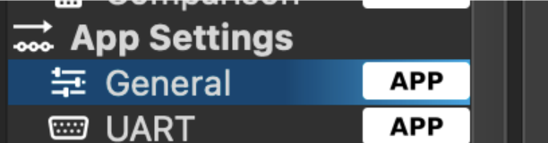
🖼
📁 vesc_fig25_app_settings_sidebar.png
PDF Pages 5 & 12 — VESC Tool sidebar: "App Settings" header with arrow; "General" highlighted in blue with "APP" badge; "UART" below it with "APP" badge
Fig 25 Navigate to App Settings → General (APP section) PDF p.5 & p.12
2
Enable Servo Output
Find the Enable Servo Output setting and change it from False to True. This repurposes the PWM servo pin as an output, allowing the VESC to drive a standard RC servo motor.
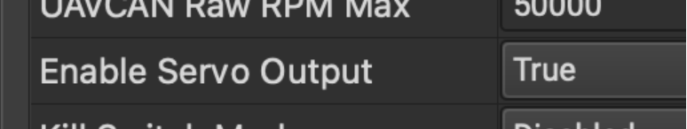
🖼
📁 vesc_fig26_servo_output_true.png
PDF Page 12 — App Settings General panel: "UAVCAN Raw RPM Max" row (50000); "Enable Servo Output" row with value "True" shown in large text
Fig 26 Enable Servo Output → set to True PDF p.12
App Settings → General — enable servo output
UAVCAN Raw RPM Max: 50000
Enable Servo Output: True# ← Change this from False to True
Kill Switch Mode: Disabled
3
Write App Configuration
Click the ↓A (Write App Configuration) button to save this change to NVRAM. Without writing, the servo output enable reverts to False on the next power cycle.
🖼
📁 vesc_fig27_write_app_config_servo.png
PDF Page 12 — Write App Configuration (↓A) button with "Write app configuration" tooltip — click after enabling servo output
Fig 27 Write App Configuration (↓A) — save the Enable Servo Output change PDF p.12
Save servo output enable setting
# Click ↓A button in toolbar after enabling servo output# "App configuration written"
4
Test the Steering Servo
Navigate to App Settings → General → Controls tab. You will see a Servo Output slider. Drag the slider left and right — the front wheels should turn left and right accordingly. There is also a Center button to return to neutral.
🖼
📁 vesc_fig28_servo_slider_test.png
PDF Page 5 — App Settings General, Controls tab: "Servo Output" label with a horizontal slider (centered at midpoint); "Center" button below the slider
Fig 28 Controls tab — Servo Output slider; drag left/right to steer; wheels should follow PDF p.5
⚠
Wheels Not Moving?
If the front wheels do not respond to the servo slider: verify the servo cable is connected to the VESC PWM port; confirm Enable Servo Output is True and the app config was written; and check that the servo motor is powered (it draws 5V from the VESC's BEC output — confirm your VESC has this output).
✓
Success State
Moving the servo output slider produces left/right front wheel steering. The VESC setup is complete. You can now connect the VESC USB cable to the Raspberry Pi (SBC) instead of the host PC and proceed with the Robocar software setup.
14
Troubleshooting & Known Issues
Quick reference for common VESC setup failure modes
Firmware & Connection
Problem
Likely Cause
Fix
VESC not detected by VESC Tool
USB cable not carrying data (charge-only cable), or wrong COM port
Try a different micro-USB cable that is confirmed for data transfer. On Windows, check Device Manager for the COM port. On Linux, check dmesg | grep usb.
VESC Tool shows no device after SCAN
VESC not powered, or USB driver not installed
Confirm battery is connected to VESC and VESC LEDs are on. On Windows, install the VESC USB driver (STM32 Virtual COM Port driver).
Firmware update fails / hangs
USB cable issue or low battery
Use a shorter, higher-quality USB cable. Ensure battery is charged. If VESC becomes unresponsive, it may need a hardware programmer to recover.
VESC bricked after firmware update
Power or USB disconnected mid-upload
This requires a ST-Link or similar SWD programmer to reflash. See the TA immediately.
Motor Detection
Problem
Likely Cause
Fix
Motor does not spin during FOC detection
Motor phase cables not connected, or motor not getting current
Check all three motor phase wire connections. Confirm battery voltage is adequate (VESC needs at least 2S). Check Current setting in detection — default 10A should be sufficient.
Motor stutters badly / detection fails
Wrong motor type selected, or phase wires in wrong order
Re-run detection with Medium Inrunner selected. If still failing, swap any two of the three motor phase wires and re-detect.
Motor spins backward during FWD test
Phase wire polarity or hall sensor wiring
Toggle the Inverted switch in the Direction step of the wizard. If direction is still wrong after writing config, swap any two motor phase wires.
Detection values look unreasonable (R = 0 or very high)
Motor phase wire not making contact
Check bullet connector crimps. Clean connectors with electrical contact cleaner. Ensure wires are not broken internally.
Hall Sensors
Problem
Likely Cause
Fix
Hall Table all 255 after detection
Hall sensor cable not connected
Re-seat the 6-pin JST hall sensor connector. Verify pin 1 orientation matches the VESC pinout diagram.
Motor works fast but stutters at low RPM
Hall sensors disabled or table incorrect
Verify Sensor Mode = Hall Sensors. Re-run hall sensor detection. Write motor config after.
Hall detection succeeds but some values still 255
Damaged hall sensor wire
Inspect the hall sensor cable for pinched or broken wires. Replace cable if damaged.
Servo Steering
Problem
Likely Cause
Fix
Servo slider in VESC Tool does nothing
Enable Servo Output = False, or app config not written
Go to App Settings → General, set Enable Servo Output to True, click ↓A to write app config, then test again.
Servo moves in VESC Tool but not from ROS2
VESC USB not connected to Raspberry Pi
After VESC setup on host PC, move the USB cable from laptop to Raspberry Pi USB port. The Pi runs the actuator ROS2 node.
Servo only moves one direction
PWM signal range not calibrated for this servo
The servo PWM center, min, and max values may need adjustment. These are in App Settings → General — consult the TA for your specific servo specs.
Steering direction inverted in autonomous mode
Steering polarity setting in Robocar YAML
Set steering_polarity: -1 in car_config.yaml and run build_ros2. This is a ROS2-level fix, not a VESC setting.
Battery & Power
Problem
Likely Cause
Fix
VESC immediately shuts down under load
Low-voltage cutoff triggered — battery too low, or wrong cell count configured
Charge the battery. Verify Battery Cells Series matches your actual battery (3S or 4S). Write motor config after any change.
LiPO alarm beeping constantly
Battery discharged below 3.0V/cell
Stop all tests immediately. Charge the battery. Do not discharge a LiPO below 3.0V per cell — permanent damage occurs.
VESC runs for a few seconds then cuts out
Motor current limit too high, or thermal protection
Let VESC cool for 5 minutes. If persistent, reduce Motor Current Max in FOC settings. Default detection values should be safe for class motors.
UCSD Jacobs School of Engineering — ECE/MAE 148 Intro to Autonomous Vehicles